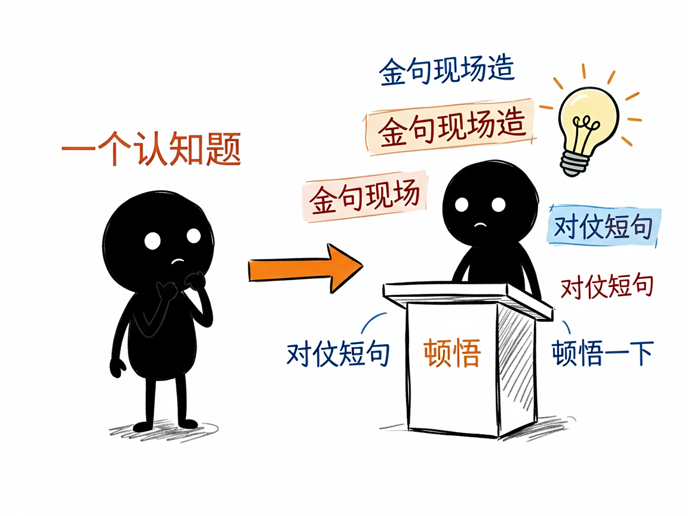
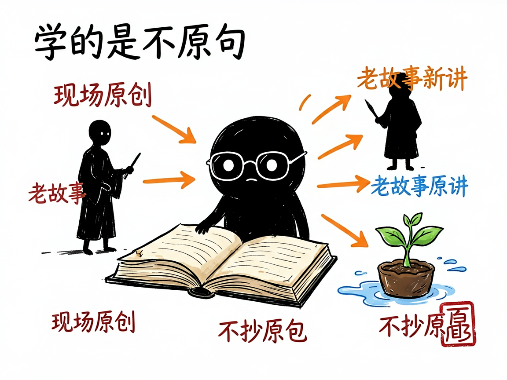

想写出"罗振宇式"有启发的好文章？这个助手帮你把金句和故事安排明白 —— luozhenyu-bookwriter 介绍
你有没有过这种感觉：听罗振宇讲东西特别带劲——几句对仗短句就让你"哦"地一下，一个历史人物的故事就把道理说透了。可自己提笔，写出来的全是"我们要相信""加油"这种自己也知道没劲的话。
luozhenyu-bookwriter 就是来解决这件事的。 你给它一个认知类选题，它还你一篇有启发、有金句、有故事、带"躬身入局"劲头的文章，语气像罗振宇。它把罗振宇 14 年内容经验（《罗辑思维》、"罗胖60秒"、跨年演讲、《阅读的方法》《启发》等）拆成一套可执行的写法框架。
它和刘润那个是"同门不同味"：刘润偏商业洞察，罗振宇偏认知启发。一个开头常是"你可能正在……"，这个开头常是"我是罗胖……"。

它到底能做什么
- 支持三种写法：罗胖60秒（60–150 字超短启发，适合热点快评）、罗辑思维长文（2000–4000 字，适合认知升级、人物拆解）、跨年演讲稿（万字起，适合年度总结、大型演讲）。
- 自动套三种逻辑势能：先抛冲突再给答案、先具体再抽象最后落到行动、先讲现象再解释最后给启发，让文章有起承转合。
- 强制"金句现场原创"：它不照搬罗振宇的原句，而是按公式（对仗式、反常识式、"一X就Y"式等）为你的主题现造金句，每千字至少 3 句。
- 帮你用历史人物讲现代道理（曾国藩、拿破仑、卢梭……），但要求每篇换新故事，不老拿同一批人凑数。
- 用"打比方"把抽象概念翻成生活里摸得着的东西（水、路、容器、种子），降低理解门槛。
- 写完后做 12 项质量自检，比如禁用词（"大家""鸡汤""震撼发布"）、句长上限（比刘润更短，每句不超过 40 字）。

怎么用
你不需要记任何命令。在 codex / workbuddy 等 agent 装好 luozhenyu-bookwriter 技能后，直接对 AI 说话就行：
场景 1：想赶个热点，发条短启发 你：帮我用罗胖60秒的风格，写一条关于"AI 时代普通人怎么办"的短启发，100 字左右。 AI：它识别成"罗胖60秒"短文体，选好逻辑势能，现造几句金句、配一个生活比方，几分钟给你一段可直接发的短文，并标出哪里还能加故事。
场景 2：要写篇年度复盘长文 你：年底了，我想写一篇关于"长期主义"的跨年演讲体长文，2000 字，带点历史人物故事。 AI：它按跨年演讲稿结构起草，每写完一个小主题就停下来等你确认，过程中不断塞金句、换故事、打比方，最后做 12 项自检再交给你。
场景 3：想拆一个人物 你：用罗辑思维长文的味道，拆解一下曾国藩，讲讲他怎么面对失败。 AI：它选好人物、找新角度、铺开"现象—解释—启发"的节奏，给你一篇有故事也有观点的长文，绝不拿老套例子凑数。
谁适合用
- 知识博主、认知类自媒体，想稳定产出有启发的好文。
- 做个人成长、长期主义、读书分享内容的人。
- 需要写演讲稿、年度复盘、热点回应的人。
- 做 AI 写作类产品的团队，可把它当现成的"启发式风格框架"来复用。
一点说明
它最讲究的一条原则是"学风格不抄句子"——金句、故事、比喻都必须为当前主题现场原创，直接套罗振宇代表作里的原句会被判不及格。它不擅长学术论文、纯虚构、朋友圈超短文案、财务报告这类。它是装在 AI agent 里的一个技能（不是独立打开的软件），装好后你直接在对话框里用就行；具体能调到什么程度，以项目里的说明文档为准。